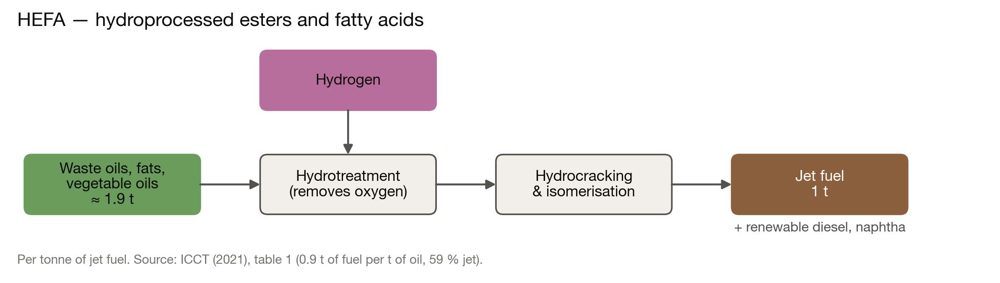
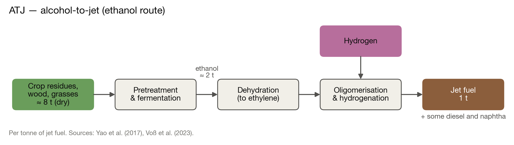
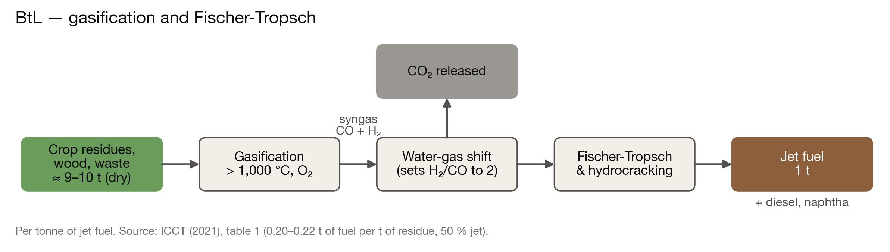
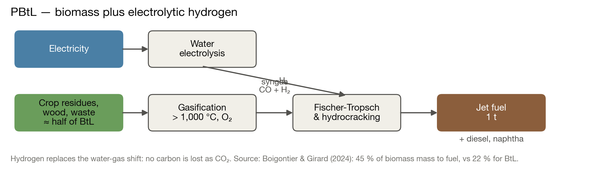
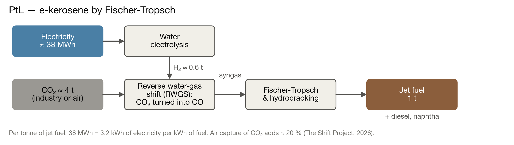
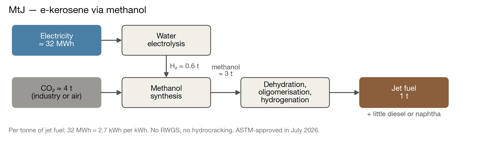
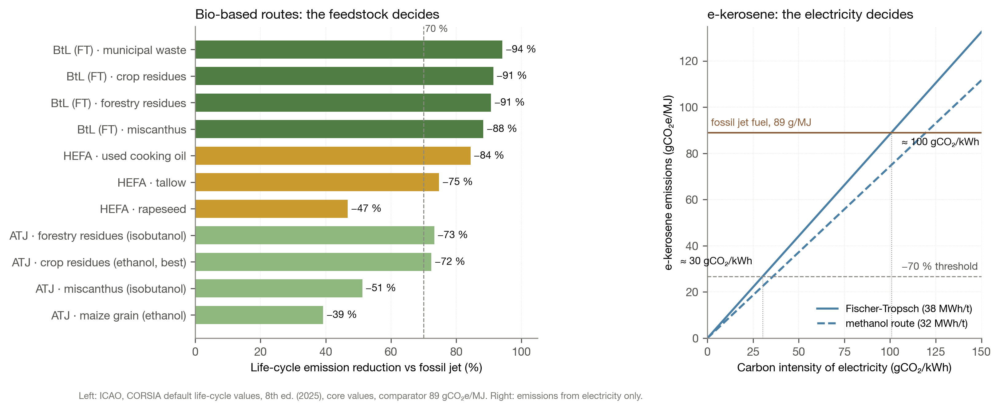
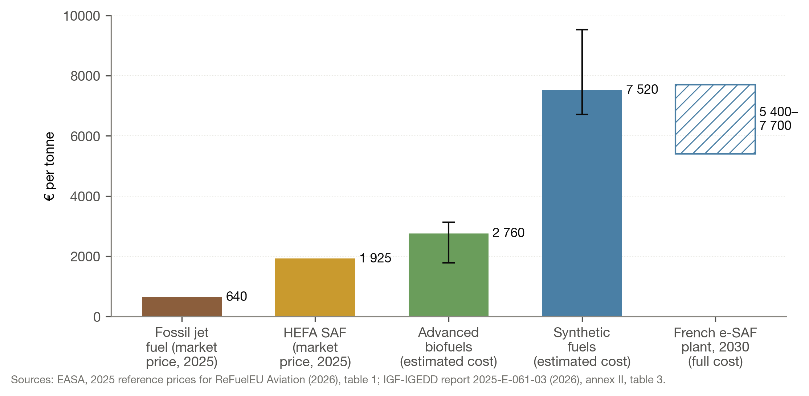

Les carburants d'aviation durables : six filières et leurs ordres de grandeur
Les six façons de fabriquer un kérosène d'aviation sans pétrole : à partir d'huiles usagées (HEFA), d'alcool tiré de la biomasse (ATJ), de biomasse gazéifiée (BtL, et PBtL avec de l'hydrogène), ou d'électricité et de CO₂ (e-kérosène par Fischer-Tropsch ou par le méthanol). Chaque filière a son schéma et ses chiffres par tonne de kérosène : intrant, rendement, électricité, réduction d'émissions, coût, maturité, gisement. Le tableau final montre que chaque filière bute sur une ressource : huiles, biomasse (8 à 10 t par tonne) ou électricité (32 à 38 MWh par tonne).
1. La question et la réponse
La question. Peut-on faire voler les avions d’aujourd’hui avec un carburant qui émet beaucoup moins de CO₂ que le kérosène fossile, et avec quoi le fabrique-t-on ?
La réponse, en trois phrases. On sait fabriquer un kérosène de synthèse de six façons, à partir d’huiles usagées, de biomasse ou d’électricité et de CO₂, et ce carburant se mélange au kérosène fossile dans les avions actuels. Chaque filière bute sur une ressource : les huiles usagées sont rares, les filières de biomasse demandent 8 à 10 tonnes de biomasse sèche par tonne de kérosène, et les filières électriques 32 à 38 MWh d’électricité par tonne. C’est pourquoi ces carburants coûtent de 3 à 12 fois le prix du kérosène fossile, et pourquoi aucune filière ne suffit seule.
Deux voies écartées d’emblée. L’électrification directe (batterie et moteur électrique) ne mène pas loin dans les airs : une cellule Li-ion embarque ≈ 0,8 MJ/kg contre ≈ 43 MJ/kg pour le kérosène, un facteur 50 — de quoi ne transporter qu’une vingtaine de passagers sur quelques centaines de kilomètres (le démonstrateur chinois CE-25A de COMAC, 19 places et 400 km d’autonomie, a effectué son premier vol avec équipage le 14/11/2026 : Simple Flying, 16/11/2026, d’après l’AFP). L’hydrogène comme carburant est écarté lui aussi : stocker du H₂ à haute pression (ou cryogénique) dans un avion et l’employer dans une turbine ou une pile à combustible reste à bas niveau de maturité (TRL bas). D’où cette note sur le kérosène de synthèse.
Le plan. La section 2 donne le vocabulaire. Les sections 3 et 4 présentent les six filières, chacune avec son schéma et ses chiffres : trois qui partent de la biomasse, puis trois qui utilisent de l’hydrogène fabriqué avec de l’électricité. La section 5 compare émissions et coûts, la section 6 résume tout dans un tableau, la section 7 dit ce qu’il faut retenir.
2. Ce qu’on compare, et comment
Un carburant d’aviation durable (en anglais sustainable aviation fuel, SAF) est un kérosène qui n’est pas tiré du pétrole. Le kérosène est le carburant des avions à réaction, un mélange d’hydrocarbures (des molécules de carbone et d’hydrogène). Un SAF a presque la même composition : on le mélange au kérosène fossile, aujourd’hui jusqu’à 50 %, sans modifier les avions (Boigontier et Girard, 2024).
Un SAF émet autant de CO₂ qu’un kérosène fossile quand il brûle. Mais son carbone a été retiré de l’atmosphère peu avant, par une plante ou par un captage de CO₂. On mesure donc ses émissions en cycle de vie : on additionne ce qu’émettent la production de la matière première, son transport, l’usine et l’énergie qu’elle consomme. Le référentiel international, celui de l’Organisation de l’aviation civile internationale (OACI, programme CORSIA), compare chaque filière à un kérosène fossile qui émet 89 g de CO₂ équivalent par mégajoule (OACI, 2025).
Tous les chiffres sont donnés par tonne de kérosène produite. Une tonne de kérosène contient 43 GJ, soit 11,9 MWh, au pouvoir calorifique inférieur (la chaleur de combustion quand l’eau produite reste en vapeur). Une usine produit aussi du gazole et du naphta (une essence légère) : la part de kérosène dit quelle fraction des liquides produits est du kérosène.
En Europe, le règlement ReFuelEU Aviation impose une part minimale de SAF dans le kérosène vendu aux aéroports : 2 % en 2025, 6 % en 2030, 20 % en 2035, 70 % en 2050. Une partie doit être un carburant de synthèse fait avec de l’hydrogène électrolytique : 1,2 % en moyenne sur 2030-2031, 5 % en 2035, 35 % en 2050. Les biocarburants tirés de cultures alimentaires n’y comptent pas (règlement (UE) 2023/2405).
3. Les trois filières qui partent de la biomasse
3.1 HEFA : hydrotraiter des huiles et des graisses
La filière HEFA (hydroprocessed esters and fatty acids) traite des huiles de cuisson usagées, des graisses animales ou des huiles végétales à l’hydrogène, pour en retirer l’oxygène. On coupe et on réarrange ensuite les chaînes de carbone pour obtenir un kérosène qui reste liquide à très basse température. C’est la seule filière produite aujourd’hui à l’échelle industrielle.

- Intrant : environ 1,9 t d’huile par tonne de kérosène. Une tonne d’huile donne 0,9 t de carburant, dont 59 % de kérosène quand l’usine maximise le kérosène (ICCT, 2021, tableau 1).
- Rendement énergétique : environ 90 % (Boigontier et Girard, 2024).
- Réduction d’émissions : −84 % sur huiles de cuisson usagées, −75 % sur suif, −47 % seulement sur huile de colza (OACI, 2025).
- Coût : 1 925 €/t en 2025, prix de marché, contre 640 €/t pour le kérosène fossile (EASA, 2026).
- Maturité : industrielle.
- Gisement : c’est la limite. L’Union européenne dispose d’environ 2,4 Mt par an de graisses et d’huiles usagées, de quoi produire 1,2 Mt de SAF, soit 1,9 % de sa consommation de kérosène prévue en 2030. Ces huiles servent déjà au transport routier, et 62 % des huiles de cuisson usagées utilisées en Europe sont importées (ICCT, 2021).
3.2 ATJ : fermenter la biomasse en alcool, puis l’alcool en kérosène
La filière ATJ (alcohol-to-jet) part de biomasse lignocellulosique, la matière des tiges, du bois et des herbes : pailles, résidus forestiers, miscanthus. On en libère les sucres, que des levures fermentent en éthanol. L’éthanol est déshydraté en éthylène, dont on assemble les petites molécules en chaînes longues (l’oligomérisation), puis on les sature d’hydrogène.

- Intrant : environ 8 t de biomasse sèche par tonne de kérosène (8,4 t de switchgrass selon Yao et al., 2017 ; 8,1 t de tiges de maïs selon Voß et al., 2023), qui passent par environ 2 t d’éthanol (Yao et al., 2017).
- Rendement énergétique : 34 % de l’énergie de la biomasse finit dans le kérosène, en brûlant les résidus de fermentation pour chauffer l’usine (Voß et al., 2023).
- Part de kérosène : élevée, 84 % (Yao et al., 2017).
- Réduction d’émissions : −72 à −73 % sur résidus agricoles ou forestiers, −51 % sur miscanthus, −39 % sur maïs grain (OACI, 2025).
- Coût : environ 2 760 €/t (fourchette 1 790 à 3 130), coût de production estimé des biocarburants avancés (EASA, 2026).
- Maturité : TRL 7 à 8 (Boigontier et Girard, 2024). Le TRL, ou niveau de maturité technologique, va de 1 (l’idée) à 9 (l’usine commerciale).
- Gisement : la biomasse lignocellulosique, partagée avec le BtL (3.3).
La même chaîne fonctionne avec de l’éthanol obtenu en fermentant les gaz des hauts fourneaux : 0,8 Mt de SAF par an en Europe en 2030 (ICCT, 2021).
3.3 BtL : gazéifier la biomasse, puis synthèse Fischer-Tropsch
La filière BtL (biomass-to-liquid) chauffe la biomasse au-delà de 1 000 °C avec peu d’oxygène : elle se décompose en un gaz de synthèse, mélange de monoxyde de carbone (CO) et d’hydrogène (H₂). La réaction de Fischer-Tropsch assemble ce gaz en longues chaînes d’hydrocarbures, que l’on coupe ensuite à la longueur du kérosène (l’hydrocraquage). La biomasse manque d’hydrogène pour cette synthèse : on en fabrique en faisant réagir une partie du CO avec de la vapeur d’eau (le water-gas shift), ce qui rejette du carbone sous forme de CO₂.

- Intrant : 9 à 10 t de résidus secs par tonne de kérosène. Une tonne de résidus donne 0,20 à 0,22 t de carburant, dont la moitié de kérosène (ICCT, 2021, tableau 1).
- Rendement énergétique : environ 55 %, tous carburants produits (Boigontier et Girard, 2024).
- Réduction d’émissions : la meilleure des filières biologiques : −91 % sur résidus agricoles ou forestiers, −94 % sur déchets municipaux (OACI, 2025).
- Coût : celui des biocarburants avancés, environ 2 760 €/t (EASA, 2026).
- Maturité : démonstration (TRL 6 à 7).
- Gisement : les ressources lignocellulosiques européennes suffiraient à près de 10 Mt de SAF, mais la construction des usines limite : l’ICCT n’attend que 1,4 Mt de SAF tiré des résidus et des déchets en 2030 (ICCT, 2021). En France, environ 10 Mt de matière sèche sont mobilisables. Les valoriser demanderait une trentaine d’usines, alors que le seul projet annoncé mobilise déjà un bassin d’approvisionnement couvrant le quart sud-ouest du pays (The Shift Project, 2026).
4. Les trois filières qui utilisent de l’hydrogène électrolytique
L’électrolyse sépare l’eau en hydrogène et en oxygène grâce à un courant électrique. Un électrolyseur industriel consomme environ 53 kWh d’électricité par kilogramme d’hydrogène (AIE, 2026).
4.1 PBtL : la biomasse complétée par de l’hydrogène
La filière PBtL (power-and-biomass-to-liquid) reprend la gazéification du BtL, mais apporte l’hydrogène manquant par électrolyse au lieu de le tirer du CO. Aucun carbone n’est rejeté pendant l’ajustement du gaz : presque tout le carbone de la biomasse finit dans le carburant.

- Intrant : environ deux fois moins de biomasse que le BtL : 45 % de la masse de biomasse finit en carburant, contre 22 % en BtL (Boigontier et Girard, 2024). En échange, l’usine consomme beaucoup d’électricité.
- Rendement énergétique : environ 75 %, biomasse et électricité comptées ensemble (Boigontier et Girard, 2024).
- Réduction d’émissions : jusqu’à −95 % avec une électricité très peu carbonée (Boigontier et Girard, 2024).
- Maturité : démonstration (TRL 6 à 7).
- Gisement : la filière économise la biomasse, ressource rare, en la remplaçant en partie par de l’électricité.
4.2 PtL Fischer-Tropsch : l’e-kérosène
La filière PtL (power-to-liquid) ne part plus de biomasse. Le carbone vient de CO₂ capté dans les fumées d’une usine (une cimenterie, par exemple) ou directement dans l’air. La reverse water-gas shift (RWGS) transforme le CO₂ et l’hydrogène en CO et en eau ; le gaz de synthèse obtenu passe ensuite par la réaction de Fischer-Tropsch, comme dans le BtL. Le produit s’appelle un e-kérosène.

- Intrants : environ 38 MWh d’électricité, 0,6 t d’hydrogène et 4 t de CO₂ par tonne de kérosène. La chimie impose au moins 0,43 t d’hydrogène et 3,1 t de CO₂ par tonne d’hydrocarbure (réaction CO₂ + 3 H₂ → CH₂ + 2 H₂O, où CH₂ est le maillon d’une chaîne d’hydrocarbure) ; pertes et coproduits font le reste.
- Rendement : 3,2 kWh d’électricité par kWh de
kérosène, soit 31 % pour le kérosène seul. Sur tous les liquides
produits, 44 % avec du CO₂ industriel et 38 % avec du CO₂ capté dans
l’air (Boigontier et Girard, 2024). Le captage dans l’air ajoute environ
20 % d’électricité. Recoupement : The Shift Project
- transforme 110 TWh en 3,0 Mt de SAF, soit 37 MWh par tonne.
- Réduction d’émissions : elle dépend de l’électricité (section 5).
- Coût : environ 7 520 €/t (fourchette 6 710 à 9 525), 8 625 €/t avec du CO₂ capté dans l’air (EASA, 2026). Pour un projet français mis en service en 2030, la mission IGF-IGEDD (2026) estime le coût complet entre 5 400 et 7 700 €/t.
- Maturité : TRL 5 à 6 en 2024 (Boigontier et Girard, 2024).
- Gisement : l’électricité. Remplacer les 7,3 Mt de kérosène consommées chaque année en France demanderait environ 280 TWh (7,3 Mt × 38 MWh/t), 2,5 fois les 110 TWh de la feuille de route la plus haute pour l’aérien, qui font déjà plus de 20 % de la production électrique française actuelle. Pour le monde, il faudrait environ 10 000 TWh, un tiers de la production mondiale d’électricité (The Shift Project, 2026).
4.3 MtJ : l’e-kérosène par le méthanol
La filière MtJ (methanol-to-jet) combine le CO₂ et l’hydrogène en méthanol, puis transforme le méthanol en kérosène par une chaîne proche de l’ATJ : déshydratation, oligomérisation, hydrogénation. Elle se passe de la RWGS et de l’hydrocraquage, et produit surtout du kérosène.

- Intrants : environ 32 MWh d’électricité, 0,6 t d’hydrogène et 4 t de CO₂ par tonne de kérosène, en passant par environ 3 t de méthanol.
- Rendement : 2,7 kWh d’électricité par kWh de kérosène, soit 37 %.
- Réduction d’émissions et coût : comme le PtL.
- Maturité : la plus récente. La norme des carburants d’aviation (ASTM D7566) admet le méthanol depuis juillet 2026 (ASTM, 2026), avec les limites de l’annexe qui couvre déjà l’ATJ, dont un mélange d’au plus 50 %. Les installations sont encore au stade pilote (Methanol Institute, 2026).
- Atout : le méthanol, liquide, se transporte. On peut le produire dans un lieu et le convertir en kérosène dans un autre, ce que la voie Fischer-Tropsch ne permet pas (Methanol Institute, 2026).
5. Émissions et coûts

Pour les filières biologiques, la matière première décide (à gauche). Sous la même étiquette « SAF », on va de −94 % (déchets municipaux gazéifiés) à −39 % (éthanol de maïs grain). Il faut toujours dire de quoi le carburant est fait.
Pour l’e-kérosène, l’électricité décide (à droite). À 38 MWh par tonne, atteindre −70 % demande une électricité à moins de 30 g de CO₂ par kWh environ ; au-delà de 100 g par kWh, l’e-kérosène émet plus que le kérosène fossile (calcul sur la seule électricité). Seule une électricité renouvelable ou nucléaire convient.

Les coûts suivent la difficulté technique. Le SAF HEFA coûte 3 fois le kérosène fossile, les biocarburants avancés environ 4 fois, les carburants de synthèse environ 12 fois (EASA, 2026).
6. Tableau de synthèse
Par tonne de kérosène. Réductions : valeurs CORSIA (OACI, 2025). Coûts : EASA (2026).
| Filière | Intrant principal | Électricité | Réduction d’émissions | Coût (€/t) | Maturité | Ce qui limite |
|---|---|---|---|---|---|---|
| HEFA | 1,9 t d’huiles usagées | faible | −75 à −84 % (−47 % sur colza) | 1 925 | industrielle | le gisement d’huiles |
| ATJ | 8 t de biomasse sèche (2 t d’éthanol) | faible | −72 à −73 % sur résidus | ≈ 2 760 | TRL 7-8 | biomasse, usines |
| BtL | 9 à 10 t de biomasse sèche | faible | −91 à −94 % | ≈ 2 760 | TRL 6-7 | biomasse, usines |
| PBtL | ≈ moitié de la biomasse du BtL | élevée | jusqu’à −95 % | non publié | TRL 6-7 | biomasse et électricité |
| PtL Fischer-Tropsch | 4 t de CO₂, 0,6 t de H₂ | ≈ 38 MWh | selon l’électricité | ≈ 7 520 | TRL 5-6 | l’électricité |
| MtJ | 4 t de CO₂, 0,6 t de H₂ (3 t de méthanol) | ≈ 32 MWh | selon l’électricité | ≈ 7 520 | pilote, certifiée en 2026 | l’électricité |
| Kérosène fossile | pétrole | — | référence : 89 g CO₂e/MJ | 640 | — | — |
7. Ce qu’il faut retenir
Les filières se rangent par leur ressource, pas par leur chimie. Le HEFA, la plus simple et la moins chère, est la première à manquer de matière. Les filières de biomasse lignocellulosique demandent 8 à 10 tonnes de biomasse sèche par tonne de kérosène, et des dizaines d’usines encore à construire. Les filières électriques n’ont pas de limite de matière, mais consomment environ trois fois plus d’électricité que le kérosène ne contient d’énergie.
Même ensemble, elles ne suffisent pas en France. The Shift Project (2026) croise les deux ressources : avec 110 TWh d’électricité et 60 % de la biomasse lignocellulosique mobilisable, la France produirait au plus 5,6 Mt de SAF en 2050, 77 % des 7,3 Mt de kérosène consommées aujourd’hui, à trafic constant.
Un SAF ne traite qu’une partie du réchauffement dû à l’aviation. Les effets autres que le CO₂ (traînées de condensation, oxydes d’azote) font environ deux tiers du réchauffement causé par l’aviation (Lee et al., 2021), et les réductions de cette note portent sur le seul CO₂. Le volume de trafic reste donc une variable de la décarbonation, à côté du choix des carburants.
8. Sources
- AIE, Global Hydrogen Review 2026 (électrolyseur, 53 kWh/kg en 2025).
- ASTM International, Aviation Turbine Fuel Standard Revised, 22 juillet 2026, https://www.astm.org/news/aviation-turbine-fuel-standard-revised.
- Boigontier T., Girard R., Sustainable Aviation Fuels (SAFs), Mines Paris PSL, 2024, https://hal.science/hal-05078674.
- EASA, 2025 Aviation Fuels Reference Prices for ReFuelEU Aviation, 2026, tableau 1, https://www.easa.europa.eu/en/downloads/143282/en.
- ICCT, Estimating sustainable aviation fuel feedstock availability to meet growing European Union demand, 2021, tableaux 1 et 3, https://theicct.org/sites/default/files/publications/Sustainable-aviation-fuel-feedstock-eu-mar2021.pdf.
- IGF-IGEDD, rapport n° 2025-E-061-03, 2026, annexe II, tableau 3, https://www.vie-publique.fr/files/rapport/pdf/304822.pdf.
- Lee D.S. et al., Atmospheric Environment 244 (2021) 117834.
- Methanol Institute, Methanol-to-Jet SAF Outlook, 2026, tableau 4.2, https://methanol.org/uploads/publications/methanol-to-jet-saf-outlook-2026.pdf.
- OACI, CORSIA Default Life Cycle Emissions Values, 8ᵉ édition, 2025, tableaux 1 à 4.
- Règlement (UE) 2023/2405 (ReFuelEU Aviation), annexe I.
- The Shift Project et Aéro Décarbo, Pouvoir voler sans pétrole, synthèse, 2026, p. 12 à 15.
- Voß S., Bube S., Kaltschmitt M., Fuel Communications 17 (2023) 100093.
- Yao G. et al., Biotechnology for Biofuels 10:18 (2017), tableaux 1 et 3.
Les figures sont produites par plot_saf_filieres.py,
dans le dossier Production/SAF/. Les électricités des voies
de synthèse (38 et 32 MWh par tonne) sont des calculs de chaîne,
recoupés par The Shift Project (2026).
Télécharger la version PDF (les liens y restent actifs).